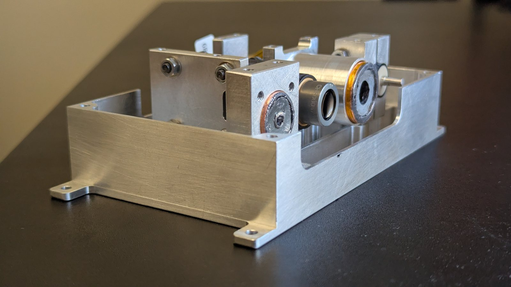

IAn element map can’t tell you how a rock formed
An element map tells you what a rock is made of. It can't tell you how the rock formed.
X-ray fluorescence (XRF). Each element gives off X-rays at its own energies when you excite it. Iron answers at 6.4 keV, calcium at 3.7 keV and strontium at 14.2 keV.
Mössbauer spectroscopy. An iron nucleus feels the atoms around it. Iron in olivine, in rust and in a magnet each leave a different fingerprint.
Two rocks can hold the same amount of iron and tell opposite stories. In one, the iron sits in olivine, which crystallizes from magma. In the other, it sits in goethite or jarosite, which form in water. Both give the same XRF spectrum. Mössbauer separates them. On Mars, Spirit used it to find goethite in the Columbia Hills [Morris et al. 2006], and Opportunity found jarosite at Meridiani Planum [Klingelhöfer et al. 2004].
IIX-ray fluorescence names the elements
Knock out an inner electron, and the atom announces itself with an X-ray.
Our XRF source is ²⁴¹Am, which gives off X-rays and a 59.5 keV gamma ray. When one of them knocks an electron out of an atom’s innermost shell, an outer electron drops into the gap and the atom emits an X-ray. Its energy depends on the charge of the nucleus, so each element has its own lines. Counting photons at each energy gives a spectrum. The peak positions name the elements and the peak areas give their amounts.
schematicOne detector, two kinds of signal. With ²⁴¹Am the detector records element lines. With ⁵⁷Co it records the 14.4 keV gamma rays used for Mössbauer and the 6.4 keV iron X-rays given off after a nucleus absorbs one. The shaded bands are the energy windows the electronics count. Line positions come from X-ray tables. Peak heights are illustrative for a basalt.
XRF depends on three things. The excitation must beat the electron’s binding energy, so heavy elements need harder X-rays. Light elements such as sodium and magnesium give off soft X-rays that the rock reabsorbs. And the rest of the rock absorbs and re-excites lines, so concentrations need a model of the whole sample. We use PIQUANT, the code written for the PIXL instrument on Perseverance, checked against a certified glass standard.
IIIMössbauer spectroscopy reads what the iron is doing
A nucleus absorbs only a gamma ray tuned to it, and you tune it by moving the source a few millimeters per second.
1. A nucleus absorbs only its own photon
The source is radioactive ⁵⁷Co. It decays into an excited ⁵⁷Fe nucleus, which can emit a 14.4 keV gamma ray. Another ⁵⁷Fe nucleus in the rock absorbs that gamma ray only if the energy matches its own transition to about one part in three trillion. A free atom would recoil and lose more energy than that. In a crystal, a large share of the nuclei emit and absorb without any recoil, because the whole lattice takes up the kick. That is the Mössbauer effect. Only about 2% of natural iron is ⁵⁷Fe, but that is enough.
schematicThe lower plot puts the emission and absorption lines on one energy axis. A shift of 0.4 mm/s, typical between iron minerals, moves the absorption line by 19 neV, about four line widths.
2. Move the source to tune the energy
The atoms around an iron nucleus shift its levels by tens of billionths of an electronvolt. To scan across those shifts, a drive moves the source toward and away from the rock. A speed of 1 mm/s shifts the gamma ray by 48 neV through the Doppler effect. The electronics sort each detected photon by the source velocity at that moment. Whenever the velocity matches a transition in the rock, the rock sends more photons back toward the detector and a peak grows.
simulatedI simulate this one photon at a time. Each source photon leaves at the drive velocity of its moment, at an angle drawn from our head’s Monte Carlo, and the sample’s lines decide whether it comes back to the detector. Each detected photon goes into one of 512 velocity channels, and the red marker shows the channel being filled. Speed sets how many photons each frame simulates: about 30,000 a second at 1×, 3 million at 100×. The drive keeps its pace, so more speed means more counts per pass, and the noise shrinks as one over the square root of the counts. The purple line is the average the dots scatter around. The real drive is about 150 times faster.
3. The neighbors write a fingerprint
Three numbers describe most spectra. The isomer shift (IS) moves the whole pattern and tracks the oxidation state: Fe²⁺ sits near 1.1 mm/s, Fe³⁺ near 0.4 mm/s. An uneven electric field around the nucleus splits the line in two, a doublet, and the gap, the quadrupole splitting (QS), reports the shape of the site. A magnetic field splits it into six, a sextet, and its spread gives the hyperfine field (Bhf). Iron oxides that are magnetic at room temperature show sextets. Most iron silicates show doublets.
What it depends on
- How many iron nuclei the photons reach. More iron gives a stronger signal, up to a point where the top layer absorbs everything.
- How stiffly the iron is held. The recoil-free share drops as the rock warms. A rock at Mars daytime temperatures gives a little more signal than one at room temperature.
- How sharp the source line is and how steady the drive is. Any wobble in the velocity smears every line.
- The source strength. ⁵⁷Co has a half-life of 272 days. Spirit’s spectra took one to two hours early in the mission and about 48 hours some 17 months later [Morris et al. 2006].
Why both in one head
One silicon drift detector records the element X-rays, the 14.4 keV gamma rays and the 6.4 keV iron X-rays. The last two come from different depths, because the rock absorbs the softer 6.4 keV X-rays faster. If the two Mössbauer spectra disagree, the rock has a coating or a weathering rind. The MER team used this two-depth trick on Mars [Fleischer et al. 2008].
modelEach signal looks to a different depth. Bars show the depth that holds 95% of each signal, computed from X-ray attenuation for our head’s angles. Both signals come from less than a millimeter, so a thin dust layer matters. In an iron-rich rock both stay shallow.
IVMössbauer found water on Mars
Mössbauer reads the iron in a rock whether it’s crystalline, glassy or made of grains too small for X-ray diffraction.
Mars: water, and what kind
The MIMOS II spectrometers on Spirit and Opportunity returned spectra from 2004 to 2012. They found jarosite, which forms in acidic water, goethite, which holds hydroxide in its structure, and magnesium-iron carbonate at Comanche that was first fitted as pyroxene [Morris et al. 2010]. They also confirmed an iron meteorite, Heat Shield Rock, from the metal in it [Schröder et al. 2008]. Perseverance carries no Mössbauer spectrometer. At Cheyava Falls, its X-ray instrument could measure the iron, phosphorus and sulfur but not whether the iron was Fe²⁺ or Fe³⁺ [Hurowitz et al. 2025].
archived dataFour rocks on Mars, four different iron minerals. Dots are counts from NASA’s Planetary Data System (MER Mössbauer summed spectra). The black curves rebuild each published fit, and the colored areas mark the main mineral. Phase assignments from Morris et al. 2006 and Morris et al. 2006b.
Pairs an element map can’t separate
modelSame elements, different spectra. Spectra built from Mars-temperature parameters in Morris et al. 2006, with lines 0.28 mm/s wide (FWHM). Arrows mark the isomer shift (IS), the quadrupole splitting (QS) and the hyperfine field (Bhf). Tiny magnetic grains flip their magnetization faster than the nucleus can measure it, so the six lines of bulk magnetite collapse into a doublet. That nanophase oxide is common in Mars dust and invisible to X-ray diffraction.
| Mineral | IS (mm/s) oxidation state | QS (mm/s) site shape | Bhf (T) magnetic field |
|---|---|---|---|
| Magnetite, tetrahedral Fe³⁺ | 0.31 | 0.06 | 50.1 |
| Magnetite, octahedral Fe²·⁵⁺ | 0.64 | 0 | 46.9 |
| Nanophase Fe³⁺ oxide | 0.37 | 0.91 | none |
| Ilmenite | 1.07 | 0.80 | none |
| Pyroxene | 1.16 | 2.15 | none |
| Jarosite | 0.36 | 1.22 | none |
| Hematite | 0.37 | −0.16 | 51.7 |
The Moon: where to make oxygen
Heating lunar soil with hydrogen pulls oxygen out of its iron oxides as water. The yield tracks the amount of Fe²⁺, and ilmenite (FeTiO₃) gives it up more easily than pyroxene or olivine [Allen et al. 1996]. Ilmenite and titanium-bearing pyroxene carry the same elements, so XRF can’t say which one you have. Mössbauer separates them by the gap in their doublets and gives the share of the iron in each. The O₂ yield measured in reduction tests is a few weight percent [Sargeant et al. 2020].
Asteroids and meteorites
In meteorites, Mössbauer splits the iron among olivine, pyroxene, metal and iron sulfide, and it sees how much has rusted. Those shares help classify a meteorite. No Mössbauer spectrometer has worked on an asteroid yet. A MIMOS II flew on the Phobos-Grunt mission, which never left Earth orbit.
| Question | What XRF gives | What Mössbauer adds |
|---|---|---|
| Did this rock form in water? | Sulfur, iron, calcium | Jarosite, goethite or carbonate, and their share of the iron |
| How oxidized is the surface? | Total iron | Fe³⁺ / total Fe |
| Is this good oxygen ore? | Iron and titanium | Ilmenite versus pyroxene |
| Is the dust magnetic, and how fine? | Iron content | Sextet versus doublet |
| Is it a meteorite? | Nickel, iron | Metal and iron sulfide |
VA backscatter head measures a rock as it is
A backscatter head: source and detector sit on the same side, so it measures a rock as it is.
schematicBackscatter geometry. The source and detector sit on the same side of the sample. That lets the head take a measurement directly on rock or soil. In a typical transmission setup, a thin prepared sample sits between the source and detector. Relative sizes and distances are illustrative.

The drive
MIMOS II moved its source with a 50 g voice coil, like a small loudspeaker. Our head uses a 7 g amplified piezo actuator. The piezo stack inside it grows by a fraction of a micrometer when you apply a voltage, and an oval steel frame turns that into a larger motion. A piezo is compact, but its motion depends on its history, drifts as it warms and can ring. Earlier piezo Mössbauer drives handled this in different ways. A 1974 design locked the drive frequency [Schmidt et al. 1974], and a 2002 miniature instrument ran an open-loop sine wave and got distorted spectra outside a few frequency bands [Casas et al. 2002].
videoThe drive in slow motion. The motion is real and tiny: the frame’s top beam moves about one pixel in this footage, so the left video looks almost still. On the right, each frame is shown in gray with its difference from the average of all frames painted gold. Nothing is magnified or warped. The gold lines are the edges of the frame’s top beam flashing as it moves, while the fixed base stays dark.
Our drive runs a 4,096-point waveform 30 times a second. A strain gauge on the actuator records what it actually did, and a learning loop compares that with the target after every pass and adjusts the next waveform. It settles in about 20 passes. The same actuator can then run different velocity ranges and waveform shapes.
From detector pulse to spectrum
A silicon drift detector turns each photon into a voltage pulse whose height is proportional to its energy. A Teensy microcontroller sorts the pulses into energy windows (14.4 keV, 6.4 keV or an XRF line) and a multichannel scaler bins them by the phase of the drive cycle. Thousands of cycles add up to a spectrum.
VIEach part adds counts or blurs lines
Every part of the head either adds counts or blurs lines, and a model of each tells you which.
Activity decays with a 272-day half-life. A decay chart for each source predicts the count rate, so a run that comes in low points to something else.
A laser vibrometer measures the real velocity. Its departure from the target was 0.11 mm/s RMS and repeated cycle to cycle, so it can be mapped and corrected.
A Monte Carlo photon tracer follows each gamma ray to the rock and back. It predicts both the count rate and the line broadening from photon angles.
Energy windows and dead time decide which counts land in the spectrum. I traced the firmware to confirm how it bins photons by drive phase.
Attenuation sets the sampling depth. A Debye model of the recoil-free fraction corrects mineral shares for temperature.
PIQUANT models the whole sample to turn peak areas into concentrations, checked against a certified glass standard.
Geometry: why lines broaden
Only the part of the source velocity along a photon’s path shifts its energy. A photon leaving at angle θ to the drive axis sees v cos θ, so a line that belongs at v0 shows up at v0/cos θ. Photons leave over a range of angles, so lines smear outward, most of all far from zero velocity. Moving the source closer to the aperture lets in more photons and more angles: you count faster and see blurrier lines.
simulatedSpeed versus sharpness. Move the slider to change the photon angle on the left. The upper right shows how often detected photons arrive at each angle. The lower right starts from an iron sextet (gray). Its outermost line widens from 0.28 to 0.31 mm/s with the source 30 mm back (blue) and to 0.73 mm/s at 8 mm (purple), where the head collects eight times as many counts.
Geometry: comparing three heads
simulatedThree versions of the head at the same scale. Each ray is a detected photon, colored by its angle to the drive axis. The model predicts that moving the source about 12 mm back in the next design keeps today’s line sharpness and doubles the count rate. The Monte Carlo write-up builds this from a photo of the head.
Checked against our backscatter spectra, the angle model accounts for about half of the extra line width we measure in backscatter compared with transmission. The rest is still open. Candidates are the drive, the source line and the detector.
VIIThe prototype works, and the write-up is under way
The three-year project under NASA’s PICASSO program (Planetary Instrument Concepts for the Advancement of Solar System Observations) closed with a review in November 2026. With one detector, the assembled prototype recorded backscatter Mössbauer spectra of iron minerals, including a five-mineral Mars soil simulant, and XRF spectra of trace elements in a glass standard. We also ran the drive at 60 °C. We’re writing up the combined Mössbauer and XRF results with our JPL collaborators.
What I did
- Measured the piezo drive’s velocity with a laser vibrometer and compared candidate feedback sensors.
- Traced and debugged the counting electronics that sort detector pulses by drive phase.
- Wrote the photon-transport model and measured the assembled head from photographs to feed it (Monte Carlo write-up).
- Checked the model against the prototype’s backscatter spectra.